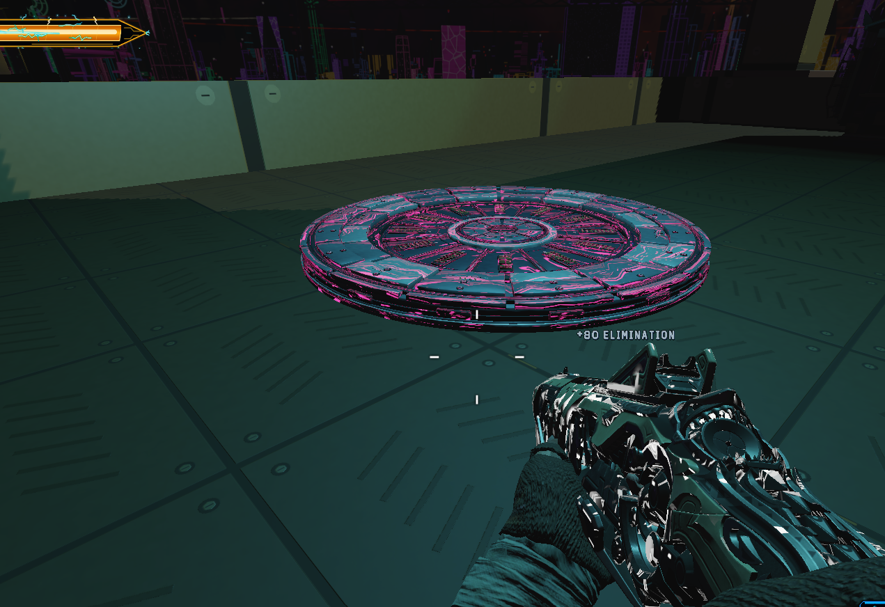
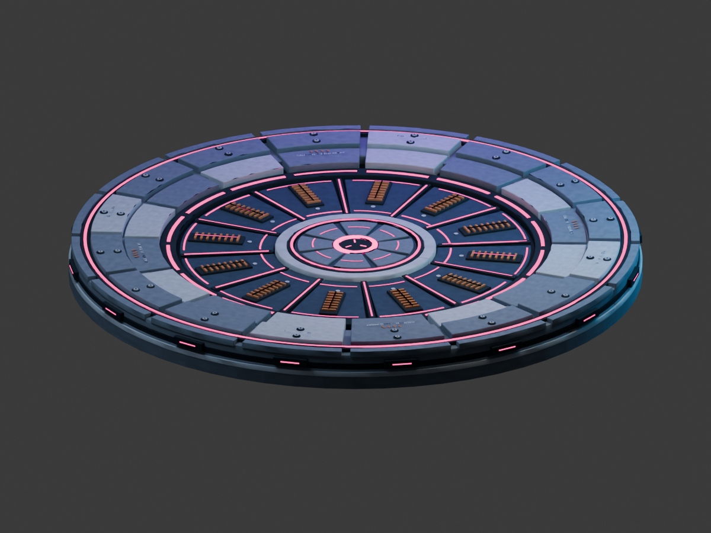
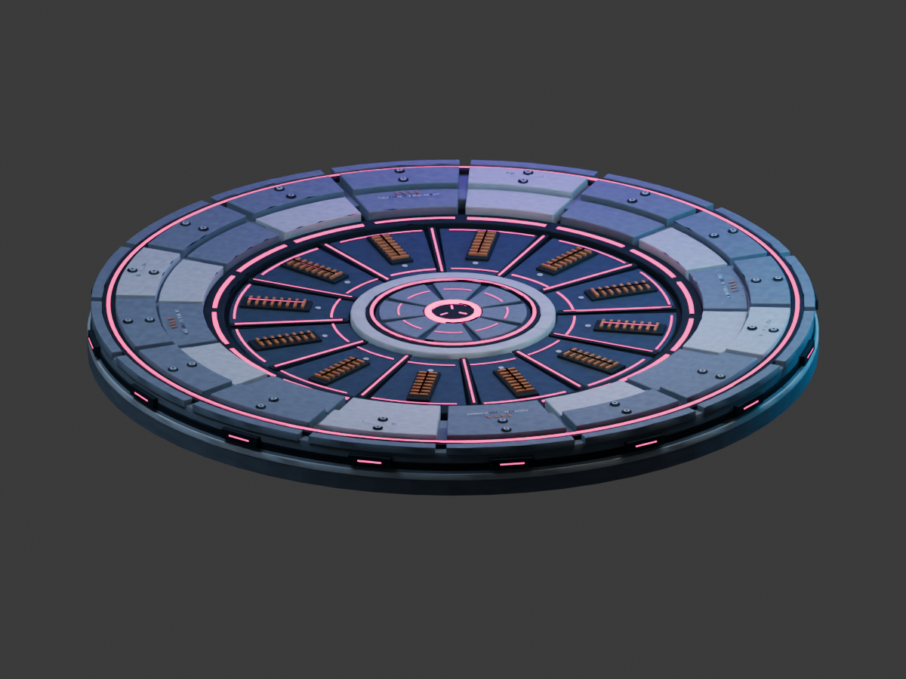

September 26, 22:40: The user accepts the metal finish and requests green ready lights, yellow animated pending lights and no glow without power. Current color review. The pink strips in the earlier images below are superseded.
Included in Archer's build 10. The deployment audit passed: explicit zero glow-depth offset, lower gloss, matching textures and all model LODs. Your in-game visual retest remains.
The native material inherited a glow-depth offset absent from the Blender model. The repair explicitly uses zero offset, with lower gloss for a softer metal finish. These historical previews predate the green-ready correction.


Same exported binary, camera and lights. These Blender renders illustrate the gloss adjustment only; the old native depth distortion is not simulated.

Diagnosis, checks and build status · Power and recharge states · Crown alarm improvements